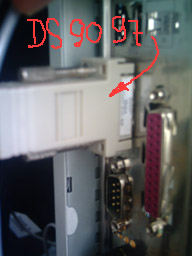

Температура воздуха за окном — сделай сам!
Датчик температуры
В Ждановичах (минский радиорынок) был приобретен датчик температуры DALLAS. Стоимость датчика ~5 000 белорусских
рублей.
Датчик Dallas 18B20 позволяет измерять температуру с точностью ± 0.5°С. Смотреть
технические характеристики Dallas
18B20 подробнее.
Для защиты от влаги датчик был помещен в алюминиевый кожух. Кожух служил ранее корпусом электролитического
конденсатора на 10 микрофарад.
Далее, контакты датчика были припаяны к кабелю (витая пара), а место пайки было тщательно загерметизировано.
Другой конец кабеля подключен к конвертеру сигналов DS9097,
который обеспечивает преобразование электрических сигналов датчика в сигналы интерфейса RS-232,
т.е. для COM-порта компьютера. К конвертеру сигналов можно подключить одновременно до 256 датчиков.

Если для подключения датчика планируется использовать кабель длиной свыше 2-3 метров, то на датчик
следует подать дополнительное питание 5 вольт постоянного тока.
Метеостанция
Чтобы исключить нагревание датчика от прямых солнечных лучей, а в зимнее время и тепла от окна, помещаем
датчик в пластиковый кожух. Кожух — баночка белого цвета от Гербалайфа у которой срезано дно,
а в гороловине проделано несколько отверстий. Отверстия служат для циркуляции воздуха внутри банки.
Датчик вставляется через отверстие в крышке банки, которое тоже следует загерметезировать от попадания
влаги внутрь кожуха.
Как уже было указано выше, нужно исключить влияние на показания датчика тепла от окна. Поэтому датчик
должен быть отнесен от окон на как можно большее расстояние. Для этого всю конструкцию за крышку привинтили
шурупами к Г-образному 50-ти сантиметровому кронштейну. Кронштейн согнут из легкой алюминиевой балки,
что позволило его прикрепить двумя шурупами непосредственно к оконной раме.
Ну и, собственно, «метеостанция» в сборе.
Впоследствии, как оказалось, для защиты от Солнца недостаточно поместить датчик в белый и хорошо вентилируемый
контейнер. Следует также оклеить банку алюминиевой фольгой, а при увеличении высоты Солнца над горизонтом
(весной и летом), видимо придется предотвращать нагрев датчика и от здания.
Работы ведутся... :)
Софт
Для отображения показаний датчика используется программа «DigiTemp»,
которая позволяет получать и обрабатывать данные с 255 датчиков одновременно, причём это могут быть
и не только датчики температуры.
Можно настроить программу для вывода результатов наблюдений не только на экран, но и в текстовый файл.
Сейчас показания датчика снимаются каждые 30 секунд и на сайте они отображаются в блоке Погода
за окном.